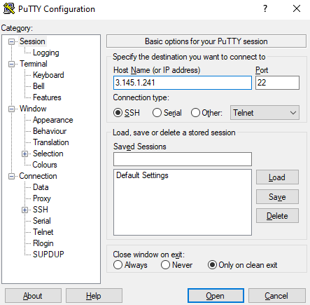

Conexão SSH com uma Máquina Virtual na AWS
Agora que temos o cliente SSH instalado em nossos computadores, vamos utilizar o SSH para acessar uma máquina virtual Linux hospedada na AWS (serviços de computação em nuvem da Amazon).
{kind=link}
Nesta aula, iremos aprender a utilizar alguns comandos do Linux. Os comandos enviados serão todos executados nesta máquina remota (acessada por ssh).
Info
Caso ainda não tenha recebido as informações de acesso, pergunte ao professor:
- O host.
- O usuário.
- A senha.
Info
O SSH é amplamente utilizado por administradores de sistemas e desenvolvedores para realizar tarefas como:
- Gerenciamento de servidores.
- Transferência de arquivos.
- Acesso remoto a máquinas.
Realizar conexão
Vamos realizar a conexão SSH. Para isto, será importante você lembrar se realizou a instação do cliente SSH:
- Direto no Windows (Opção 1):
- Neste caso, utilize o
terminaloucommand prompt.
- Neste caso, utilize o
- PuTTY (Opção 2):
- Abra o PuTTY e configure o host.
Atenção!
Em todas as etapas da aula, substitua o IP 3.145.1.241 pelo IP do host fornecido pelo professor.
Info
O endereço IP (do inglês Internet Protocol) é como um endereço único atribuído a cada dispositivo conectado à internet. Assim como uma casa tem um endereço para receber correspondências, um dispositivo tem um endereço IP para enviar e receber dados na internet.
Utilize abaixo a opção adequada, conforme sua instalação:
Basta substituir o IP no comando. Utilize o IP fornecido pelo professor, o do terminal é apenas um exemplo.
Ao apertar ENTER, será solicitado que confirme o desejo de continuar a conexão e informe a senha.
Info
Digite yes e a senha fornecida pelo professor!
$ ssh boss@3.145.1.241
The authenticity of host '3.145.1.241 (3.145.1.241)' can't be established.
ED25519 key fingerprint is SHA256:EG7YpJvK8j+JLyEiw7MO055W+Aty9nMJWuAuE4hERsI.
This key is not known by any other names
Are you sure you want to continue connecting (yes/no/[fingerprint])? yes
Warning: Permanently added '3.145.1.241' (ED25519) to the list of known hosts.
(boss@3.145.1.241) Password:
Informe o IP do host. Utilize o IP fornecido pelo professor, o da imagem é apenas um exemplo 
{kind=link}
Clique em Open e, na próxima tela, aceite a conexão. Então, informe o usuário e senha fornecido pelo professor.
Exercício 1
Primeiros comandos
Agora você está conectado em um computador hospedado na nuvem da AWS. Todos os comandos que você enviar no terminal serão executados nesta máquina que estamos acessando remotamente.
Dica 1
Caso você fique alguns minutos sem interagir com o terminal, pode ser que a conexão seja perdida.
Neste caso, basta fechar o terminal e realizar a conexão novamente!
Vamos aprender alguns comandos básicos de terminal!
Envio de mensagens de texto
O comando echo é utilizado para exibir informações na saída padrão, geralmente no console. Ele recebe um ou mais argumentos de texto e simplesmente os imprime na tela!
Exercício 2
Dica 2
Você pode utilizar as setas para cima e para baixo do teclado para consultar o histórico dos últimos comandos enviados.
Assim, caso queira enviar novamente uma mensagem, basta teclar a seta para cima e editar!
Limpar a tela
O comando clear no Linux é utilizado para limpar a tela do terminal, removendo todo o conteúdo anterior e deixando-a em branco, proporcionando uma visão limpa para o usuário.
Info
clear é um comando útil para melhorar a legibilidade e organizar a exibição das informações no console.
Exercício 3
Monitorar sistema
O comando htop no Linux é uma ferramenta interativa de monitoramento de processos em tempo real. Ele exibe uma visão detalhada da utilização da CPU, memória, processos em execução e outras informações relevantes de forma intuitiva e colorida, permitindo que os usuários tenham um controle mais eficiente e visual sobre o desempenho do sistema.
Exercício 4
Resposta
Dois vCPUs: eles estão identificados por 0 e 1 na parte superior da tela.
Algo próximo a 1GB de memória RAM: deve ter disponível pouco mais de 900MB na terceira linha da tela (Mem).
Dica 3
Aperte CTRL + C para fechar o htop!
Esta é uma referência da execução do HTOP: